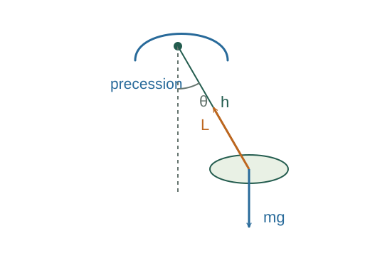

Derive rolling acceleration and slow gyroscopic precession
Friction up the slope supplies the rolling torque, while gravity drives translation. Apply no slip to relate a and α.
What the symbols mean
I: axial inertia; R: rolling radius; θ: incline angle; r: gyroscope centre-of-mass lever arm; Ω: precession rate.
When this applies
For rolling: no slip on a fixed slope. For precession: fast spin with nearly steady horizontal angular momentum, negligible nutation.
Developing the argument

Combine translation and rotation for rolling
Friction up the slope supplies the rolling torque, while gravity drives translation. Apply no slip to relate a and α.
Eliminate friction
Use f = Ia/R² and collect the terms proportional to a. An axis up the ramp reverses the resulting acceleration sign.
Describe the changing direction of spin momentum
For a nearly horizontal spin angular momentum L = Iω, turning its direction by dφ changes its vector by magnitude L dφ.
Supply the gravitational torque
The weight torque has magnitude Mgr in this geometry. Equate it to the angular-momentum turning rate.
A closer lookWhy does torque equal angular-momentum rate? ↗A worked example
Doubling the spin rate halves this ideal slow-precession rate, provided the fast-spin approximation still holds.
Derivation behind this calculation ↗A point to keep straight
The displayed precession formula is an approximation, not the full solution for an arbitrary initial gyroscope motion.
Check the assumptions and derivation ↗